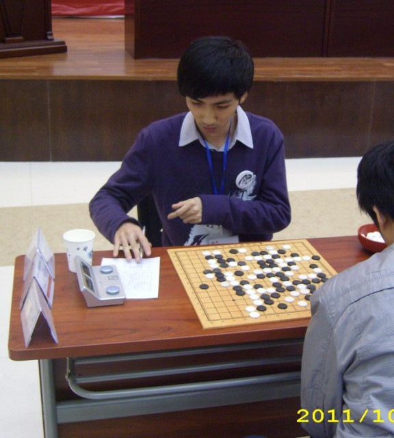
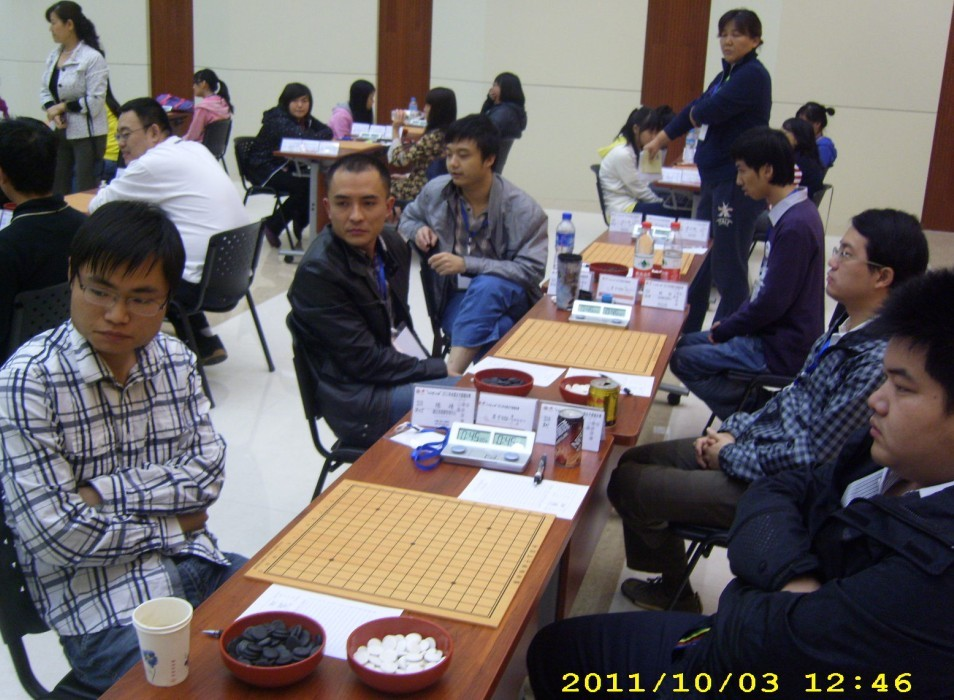
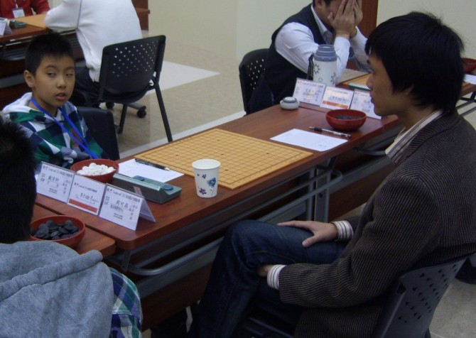

第六轮快讯-7
首页
五子棋新闻
#1 第六轮快讯-7 作者：我是裁判 发表时间：2011-10-3 17:30:12
兰志仁胜
#2 Re:第六轮快讯-7 作者：潇洒 发表时间：2011-10-3 17:44:00
怎么没有赛场照片和棋手照片。。
#3 Re:Re:第六轮快讯-7 作者：炫飞冰弦 发表时间：2011-10-3 18:01:36
引用：
原文由 潇洒 发表于 2011-10-3 17:44:00 :
怎么没有赛场照片和棋手照片。。



［ wuxiao 于 2011-10-3 20:44:29 时花20金币送鲜花一朵］
#4 Re:第六轮快讯-7 作者：高飞 发表时间：2011-10-3 20:24:45
怎么没有我的呢,,明显给我拍过呀
#5 Re:第六轮快讯-7 作者：第五象限 发表时间：2011-10-3 20:28:04
有一点甄姬的感觉 不知是谁
#6 Re:Re:第六轮快讯-7 作者：也也 发表时间：2011-10-3 21:58:14
很明显 是炫飞梦 张仲元 MM~